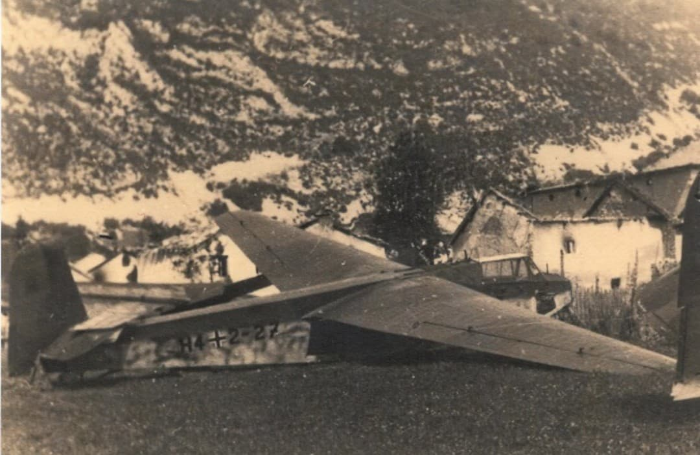
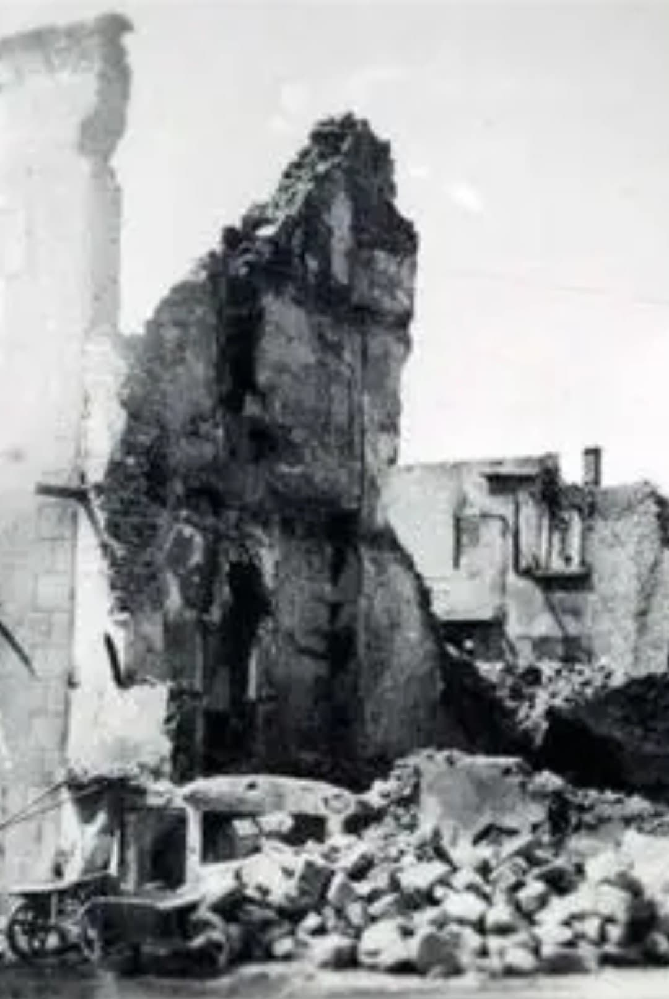

Le massif du Vercors fut l’un des bastions les plus organisés de la Résistance française. Entre 1943 et 1944, près de 3 900 maquisards se regroupent sur le plateau, transformant ce territoire en véritable forteresse naturelle.
Le projet, soutenu par Jean Moulin, visait à créer un réduit de résistance capable d’appuyer un futur débarquement allié dans le sud de la France.
Les maquisards vivaient dans des camps dispersés : cabanes de rondins, grottes, abris de fortune. L’entraînement se faisait avec des armes hétéroclites : fusils de chasse, Sten parachutées, MAS‑36 récupérés.
L’esprit du maquis reposait sur la solidarité, la discrétion et la connaissance du terrain. Les habitants du Vercors jouèrent un rôle essentiel en ravitaillant et en protégeant les résistants.

Le 21 juillet 1944, la Luftwaffe lance une opération inédite : des planeurs DFS 230 se posent directement dans le village de Vassieux-en-Vercors, débarquant des troupes allemandes au cœur du plateau.
Les combats sont violents. Les maquisards, encerclés, se battent jusqu’à l’épuisement. Le bilan est terrible : 639 maquisards tués et 201 civils massacrés.

Le hameau de Valchevrière, défendu par le lieutenant Chabal, est incendié et jamais reconstruit. Il demeure l’un des lieux les plus poignants du Vercors.
À Vassieux-en-Vercors, les ruines témoignent encore de la violence de l’attaque. La nécropole nationale honore les maquisards et les civils tombés pour la liberté.